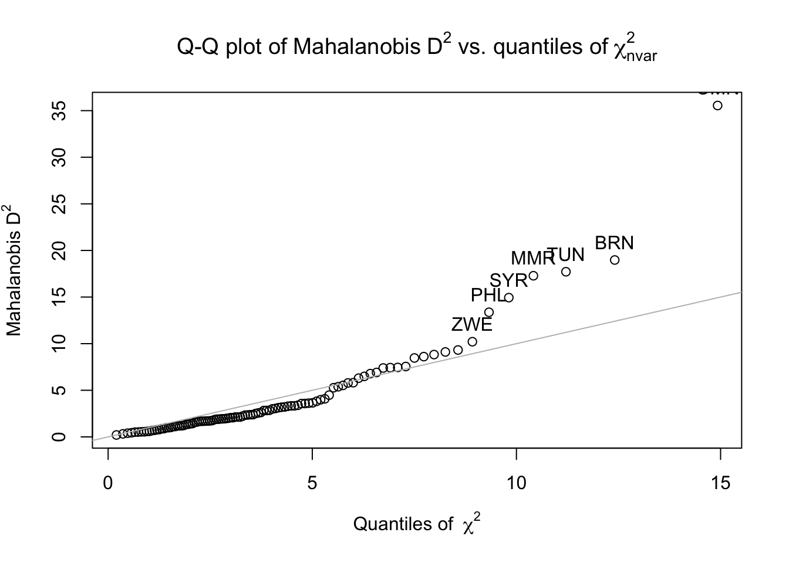
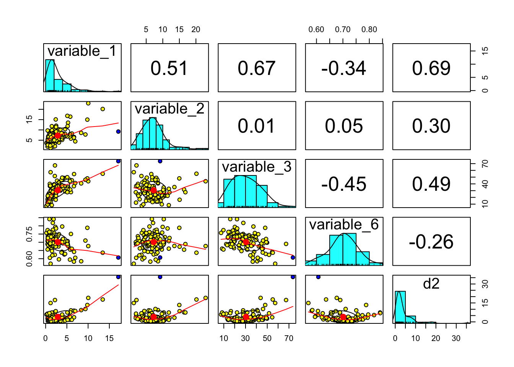
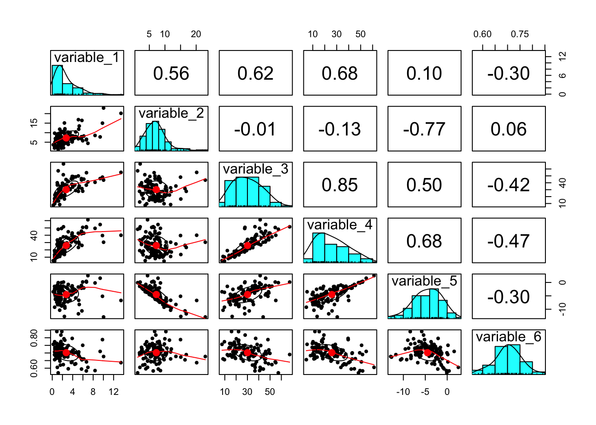

Chapter 4 Analysis
4.1 Variables
The normality of all six variables needed for the correlations is examined via Shapiro-Wilk tests for normality:
- percentage of women graduates who graduate from ICT programs,
- percentage of men graduates who graduate from ICT programs,
- percentage of women among ICT graduates,
- percentage of women among ICT graduates adjusted for the disparity in the ratio of women to men who graduate from all programs,
- disparity between the percentage of all women versus all men graduates who graduate from an ICT program, and
- GGGI
4.2 Normality
Of these six variables, only three follow a normal distribution: variable (3) variable (5), and variable (6). The table below displays all results of the Shapiro-Wilk tests. Because Pearson’s correlation coefficient (r) is the metric of interest, no transformations to the data are needed because Pearson’s r requires continuous, but not normal data.
| variable | W | p-value |
|---|---|---|
| 1 | 0.7473 | 5.056e-12 |
| 2 | 0.9033 | 1.499e-06 |
| 3 | 0.9693 | 0.0170 |
| 4 | 0.9498 | 0.0007 |
| 5 | 0.9809 | 0.1433 |
| 6 | 0.9890 | 0.5647 |
4.3 Outliers and data omission
Mahalonobis \(D^{2}\) values were computed for four of the six variables. The other two variables, variables (4) and (5) were omitted, as they were computed directly using variables (1) and (2). Including these variables and thus, their dependencies, will not allow for Mahalonobis \(D^{2}\) calculations to be possible.
The Q-Q plot below displays each of the countries’ Mahalonobis \(D^{2}\) values (the seven countries that deviate the most are labeled with their iso_a3 country code).

The figure below shows bivariate scatter plots, histograms, and the Pearson correlations for and between each of the four variables, with any outliers marked with a blue dot. Only one country, Oman (iso_a3 ‘OMN’), has a Mahalonobis \(D^{2}\) value of greater than 25. Therefore, Oman is the sole country to be removed from the analysis for being an outlier.

However, in order to correctly compare the three correlations, an identical set of countries must be the subject of each. The second and third correlations depend on the existence of data for variables (1) and (2), whereas the third correlation depends on the existence of data for variable (3). One country, Sri Lanka, has data for variable (3), but not variables (1) and (2). Thus, Sri Lanka was the second and final country to be removed from the analysis. This leaves 102 remaining countries for which sufficient data is available.
4.4 Data description
Descriptive statistics for the 102 countries and the bivariate scatter plots, histograms, and the Pearson correlations for the data after removing the outlier:
## vars n mean sd median trimmed mad min max range skew kurtosis se
## variable_1 1 102 2.74 2.41 1.74 2.32 1.20 0.20 13.44 13.24 1.84 3.83 0.24
## variable_2 2 102 7.24 3.74 6.82 6.83 2.72 1.25 22.93 21.68 1.42 3.26 0.37
## variable_3 3 102 30.09 12.60 28.40 29.53 13.52 7.49 67.35 59.86 0.39 -0.48 1.25
## variable_4 4 102 25.94 13.04 23.80 24.93 14.58 4.62 61.17 56.55 0.55 -0.60 1.29
## variable_5 5 102 -4.50 3.10 -4.31 -4.39 3.25 -12.89 2.55 15.44 -0.36 -0.14 0.31
## variable_6 6 102 0.70 0.05 0.70 0.70 0.05 0.57 0.84 0.27 -0.06 0.15 0.01
The ICT-GEP Thinkpiece does not offer an explanation regarding the consideration or removal of outliers. However, through a simple count of the countries listed in the think piece’s reference data, it appears that only 79 countries were included in the analysis.